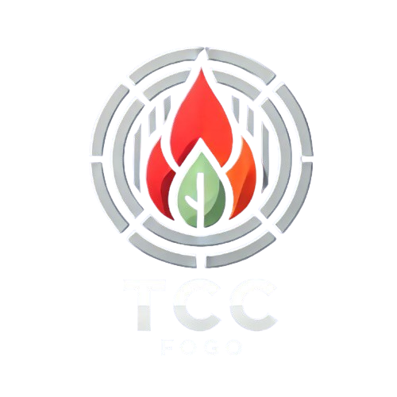

Sobre o Projeto
O TCC Fogo é um sistema desenvolvido para monitoramento de incêndios no IFRN Campus Lajes, utilizando sensores e tecnologia IoT.

Seja Bem-Vindo
O TCC Fogo é um sistema desenvolvido para monitoramento de incêndios no IFRN Campus Lajes, utilizando sensores e tecnologia IoT.